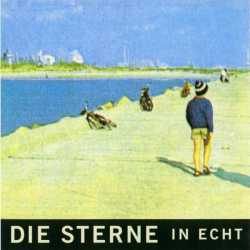

(instrumental)
Du drehst an der Mühle / und leierst dich aus / und du kannst nicht mehr / weil du glaubst du bist zu schlecht / vielleicht hast du recht / es hat niemand behauptet / du hättest eine Chance / und wenn war es vielleicht gelogen / aber das weißt du auch / es ist ein alter Brauch / nur darfst nicht vergessen / zu essen / Ich bin aufgewacht / Ich wollte sehen daß du schläfst / auf die väterliche Tour / und jetzt will ich daß du dich bewegst / weg von der Stelle wo das Loch ist / daß dich auffrißt / und sonst nichts / außer Möglichkeiten / und ab und zu ein Gedanke an / die Vergänglichkeit / Arm in Arm / ist ein Kreis / und kein Ausweg / und du darfst nicht vergessen / zu essen / Eine Kaugummiwelt / die dich nicht wirklich / sondern so tut als ob / sie dich zusammenhält / und sie verklebt dir den Magen / und du mußt dich übergeben / und kotzt das bißchen Leben in die Schüssel / soweit so gut mal überlegen... / zu essen / Fressen und gefressen werden
Er hat immer Hunger / er muß immer essen / Er muß wohnen und schlafen / und vergessen / das Gestern wie Heute wird / Heute wie Morgen / und das in diesem Laden herzlich wenig passiert / er drängelt sich in Bahnen und schubst sich aus dem Haus / in die Gegend wo man ihn erwartet / und verbraucht / er kennt sich schon lange und kann sich nicht mehr sehen / dabei gibt es wirklich tausend schöne Filme über ihn / als den Universal Tellerwäscher / in den Studios / Er wäscht wirklich Teller / er tut nicht so / Ich hatte Haben / Ich hatte Geld gespart / Ich lief durch die Phasen / war im Apparat / In diesem und jenem / um nicht alle zu nennen / Ich lief auf der Stelle und / fing an zu rennen / nichts hat geholfen / wieder alles verspielt / die Tage sehen gleich aus / es sind zuviel / Jeder Tag ist ein Verfahren gegen mich / Ich weiß nicht warum und wer / sich was davon verspricht / Ich möchte einen Anwalt / Ich will Geld / und ich möchte Gottverdammtnochmal das jemand sein Versprechen hält / Universal Tellerwäscher...
Die wollen mich vergiften / mit dem Müll / mit Mythen und Lügen Overkill / den man zu fressen kriegt / wenn man im Weg rumliegt / und irgendwelche Zeiten übersteht / Ich würde lieber wirklich / als virtuell / essen gehen / ich stecke im Tresen / und ich ersticke im Rauch / ich trinke selbst nicht wenig und mein Nachbar säuft auch / aber ich bin nüchtern / und ich bin echt / ich bin nüchtern / und nicht die Regierung / und nüchterner als jeder / der ein Wort denen glaubt / Ich bin aufgewachsen / in der britischen Zone / ich war schon immer besetzt / ich kann gar nicht ohne / und wenn es spät wird und voll / dann wünsch ich mich zurück / unter einen ihrer Panzer / schieres Glück / und ich bin nüchtern / nüchterner als jene / weil ich hab nüchterne Gene / Ich hab nüchterne Gene
Es ist gefälscht und verlangt / das man es echt sein lassen soll / Menschen wie Gläser / leer oder voll / tauschen sich aus / über dies und dasselbe / kleine Karos / große Karos und Details / Ich bin ein Stadtplan / und der da ein Bier / und Deutschrockspezialisten ham wir auch heute hier / ich laß den Handwerker kommen / der mir den Kopf repariert / Hallo Lexikon / erklär mir wie das funktioniert / Es möchte echt sein / Jesus Christus was bist du / bescheiden / es gibt ja auch noch Leute / die dich dann dafür beneiden / Gestern Utopie / und Heute überholt / in einer Anstalt / bin ich geboren / und jetzt das dritte Programm / wo das Ameisenleben spielt / und jetzt wieder raus wo / der Bauer die Rüben sät / Irgendwie ähnlich diese Welten / sehen sie aus / da wo du lebst und ich bin da auch / es möchte echt sein / Was Abenteuer ausmacht und Abende auch / das ist der Raum den du atmest / die Luft die du brauchst / um zu existieren wie ein lebendiges Wesen / Ich habe es getroffen / nicht gelesen und es möchte echtsein
(instrumental)
Ich habn weinroten Paß / mitm goldenen Adler / der bedeutet mir nichts / doch ich hebe ihn auf / für die Grenzen / in meinem Kopf / so ein Blödsinn / wie kam ich jetzt drauf / ich bin gleichzeitig hier und wär gern verreist / ich hab zwar kein Geld / doch die Möglichkeit / kein Mitleid / Olympische Spiele / für die Jugend der Welt / es geht um Gebiete / und es geht um Geld / es ist wieder dasselbe thematisch gesehen / genauso geplant / wie bekloppt schizophren / es ist offensichtlich / kein Geheimnis / schau uns in die Augen Kleines / kein Mitleid / Ein Reisebüro auf dem Weg zu sich selbst / hat nach langer Pause die Tickets bestellt / endlich erwachsen / endlich entscheiden / es ist ein Phänomen und ich kann es nicht leiden / kein Mitleid
Noch farblos und verkleidet / aber jetzt schon Mittelschicht / die sich wie immer auf Zombiepartys trifft / warum in Gottes Namen / werde ich dahin eingeladen / als wär das nicht schon schlimm / warum gehe ich auch noch hin / Man spielt Cowboy oder Clown / Mit der Vorstellungskraft eines Vorabendprogrammredakteurs / Der ganze Frust der Woche will hier endlich raus / eine halbe Schüssel Erdbeerbowle findet noch nach Haus / Ich kann mit Tieren sprechen / ich glaub ich bin im Zoo / die andere Hälfte Bowle findet gerade noch das Klo / eine konservative Ziege hat sich in mich verliebt / ich flüchte übern Flur, weil jetzt die Musik spielt / Meine Freundin die Salatbar steht leider in der Küche / und die ist völlig überfüllt / mit den weltschlechtesten Witzen / die einzige Rettung / ich weiß zwar wo sie war / erreiche ich nicht im sitzen / die Geliebte Hausbar / dann kommte ein junger Herr / er sagt er sei Redakteur / seine Wohnung ist mit Sicherheit so aufgeräumt wie sein Gesicht / wir müssen reden reden reden / reden wegen / einem Job für mich
Mein Eilzug und ein moderner Schnellzug mit diesen komischen runden Fenstern und diesem lächerlichen Marvelcomicheldenoutfit / fahren mit derselben Geschwindigkeit nebeneinander her / Irgendwo auf der Höhe von Maschen / wo man rechts und links nur Schienen sehen könnte, wenn es hell wäre, kommt uns ein Güterzug entgegen und zerhackt die Lichter des ICE's zu einer MTV Stroboskopshow / Wagen-dunkel-Lücke-Bild-/ Wagen-Lücke-Wagen-Lücke-Wagen-Lücke / Es kommt mir vor, als hätte ich eben einen Mord beobachtet / Plötzlich Schaffner / Ich sollte mich lieber um meine eigenen Angelegenheiten kümmern
Zum Totschlagen zu schön / die ganze Zeit / die uns links liegen läßt / und nicht sie sondern wir vergehen / zu mausgrauen Mündern / und schlaffen Sehnen / die sich sehnen / nach heißem Sand / nach grellem Licht / nach Sex / und Luft / das muß es geben doch dein Körper fühlt sich an wie Massenarbeitslosigkeit / und immer gleich / wir tun es wieder / ohne Spaß / zum Totschlagen zu schön / die ganze Zeit / und dein Gesicht und alles / Zwischen dem was ist / und dem was der Möglichkeit nach sein könnte / findet sich zur Zeit / kein greifbarer Feind / Wenn trotzdem jeder ein Zerstörer ist / und sich sein Ziel sucht / und nicht mehr steckenbleibt / wen trifft es dann / wer kommt / was kommt / was wird kommen müssen / wenn der Terminator / sich befreit / waiting / for you / to justify my love
Durch den kleinen Bach / hier wirft man manchmal / schmutzige Gardinen rein / das ist dann peinlich / fließen Tränen von / Pubertätspoesie / die das Grauen nicht fassen kann / und lieber flüchtet / als dazubleiben / wo sie entstand / nach Unland / Von der Nettigkeit / und Niedlichkeit der Menschen / die niemals etwas böses wollten / oder wollen werden / zieht sich ein roter Faden / durch und hinter / die Geschichten / bis zur Katastrophe / und wünscht sich dann zurück / ins Unland / Ich will jetzt keine Namen nennen / falls es einen Namen hat / ich weiß nur / ich will da nicht leben / wo es niemals Leben gab / in Unland
(instrumental)